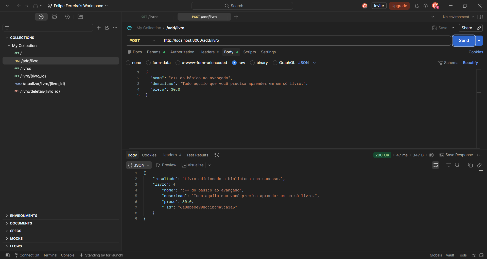
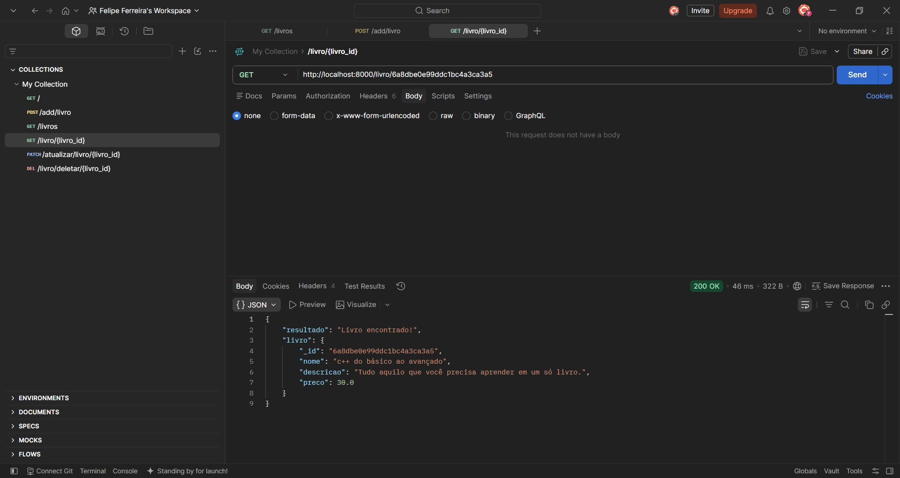
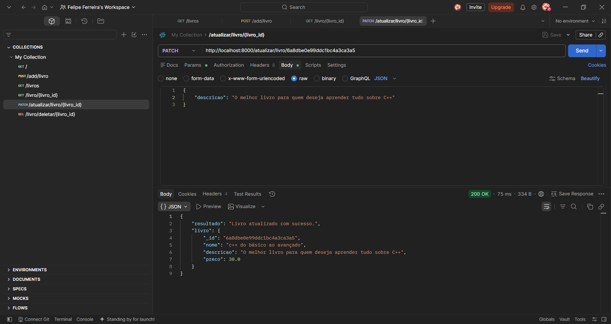
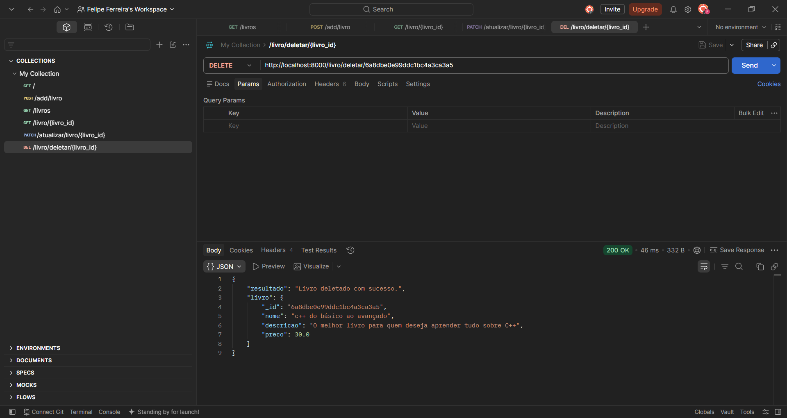

Imagens do projeto
Sobre o projeto:
FastAPI foi responsável pela definição de rotas, processamento de requisições HTTP e o retorno de respostas em JSON. Utilizei o MongoDB Atlas para armazenar os livros e o PyMongo para realizar a comunicação entre Python e MongoDB. Por fim, utilizei o Postman Desktop para testar os endpoints e verificar o comportamento das requisições e respostas da API.
Tecnologias utilizadas:
Back-end
Python, FastAPI, PyMongo e API REST.
Segurança
Dotenv para variáveis de ambiente
Teste de API
Postman Desktop